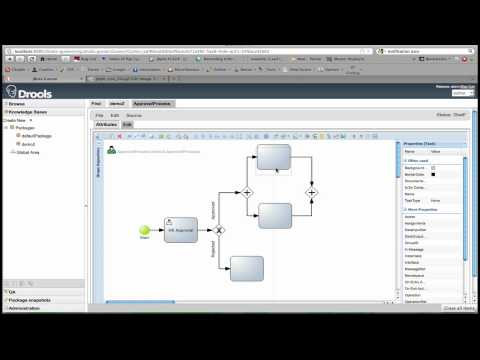

jBPM Designer version 2.1 released
We are happy to announce that we have released version 2.1 of the jBPM Designer. This is a big release which solves many issues we had in 2.0 as well as adds lots of new features. We are especially happy that jBPM Designer will also be included in the up-coming JBoss BRMS 5.3 release.
Here is a summary of what’s new and noteworthy in Designer 2.1 and we have also included a video below. Try it out and let us know what you think!
New and noteworthy
- Numerous bug fixes. The number of commits for bug-fixes alone was over 100 between 2.0 and 2.1.
- Increased performance for user interactions with the UI as well as loading time (JavaScript is now served compressed)
- New features: Support for Reusable Subprocesses (Call Activities), Multiple Instance Subprocesses, and Data Objects
- New feature: Support for Stencil set Perspectives. Allows you to specify a specific superset or a subset of supported BPMN2 nodes grouped in a named stencil set
- New feature: New data input editors. We added specific user-friendly editors for Process variables, Globals, Imports, Task Data Inputs/Outputs/Assignments, Called Elements, etc
- New Feature: Process dictionary support. Allows you to define your own process dictionary and use it inside your business processes.
- New Feature: In-Line editing of Process and User Task forms. This new feature allows you to create/modify your process and task forms in-line which is great as you do not have to leave your modelling environment to perform this feature.
- New Feature: Code highlighting and Code completion in Expression editors, code highlighting for process and task form editors and source views.
- New Feature: Smart node deletion – deleting a node will also delete its incoming and outgoing connections unless they specify an expression
- Support for both Drools Guvnor 5.3 and 5.4
Here is also a video for the Designer 2.1 release.
Yes, Tiho went a little crazy on his video editing skills, we know ;)

You can download this version from soureforge just like the previous ones. Simply replace your existing designer war with the new one. Make sure to clear our your browser cache before starting to use the new version.
As always your feedback is more than welcome. Hit us up on IRC if you would like to contribute to the jBPM Designer. Have fun!